For mounting the box that will host your Photoduino, in addition to the components you’ll need a screwdriver with flat and star tips.
Button caps
Put the two button caps on the control buttons BTN_A and BTN_B. The red cap on the BTN_A and the black cap on the BTN_B.

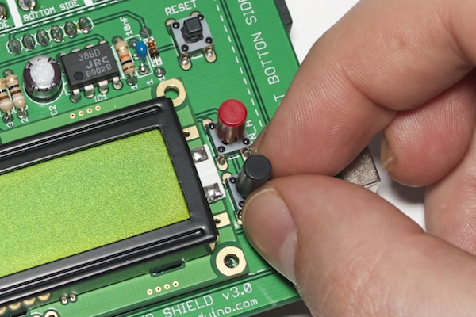
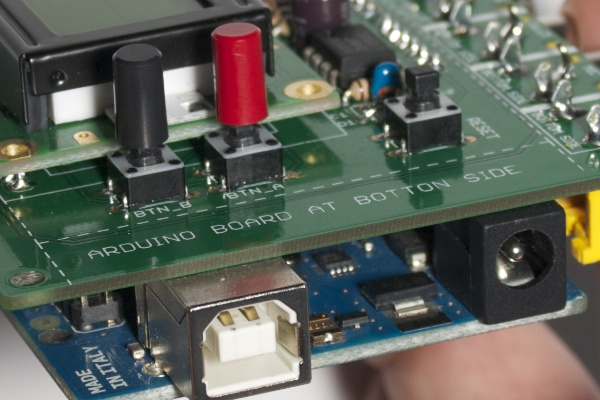
Hex spacers
To attach the two pieces of acrylic to the PCB should use hex spacers. There are four 16mm spacers and four 10mm spacers.

You put as in the following photo respecting the position. Use the 10mm separators on the top side of PCB, and 16mm spacers at the bottom side.
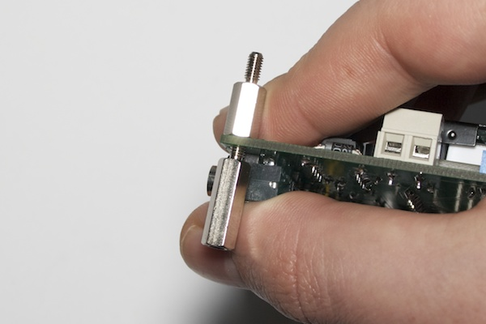


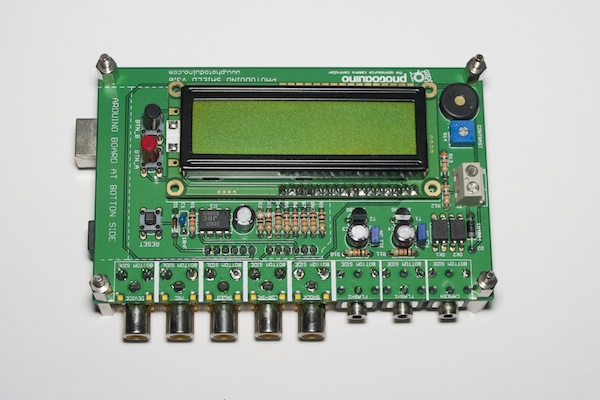
Acrylic plastic pieces
The housing consists of two pieces of acrylic that are on the top and bottom. In the next photo you can see the piece that will make based on the bottom. This piece of acrylic has a protective plastic film by one of the two sides. Peel off the protective plastic completely.
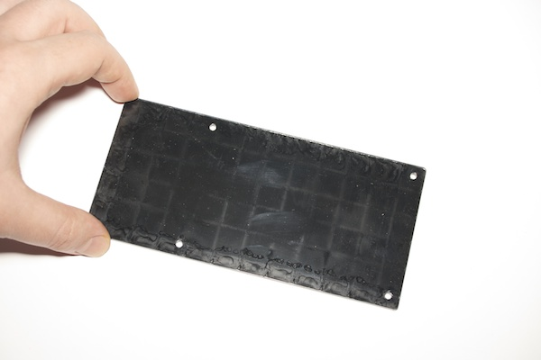
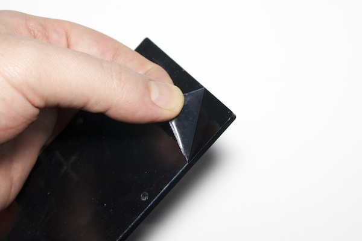
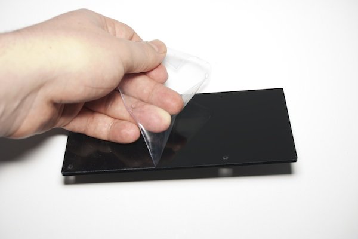
To attach the base to hex spacers you put on the PCB, you should use the four M3x12mm screws you see in the picture below.

The base is wider than the PCB on one side to accommodate the battery holder. This part should be to the left of the PCB if you look at the PCB side of the screen leaving the buttons to your right.
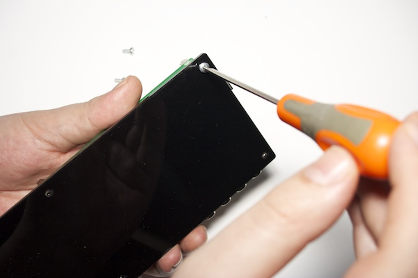

You should also remove the protective plastic film from the acrylic piece that will go on top.
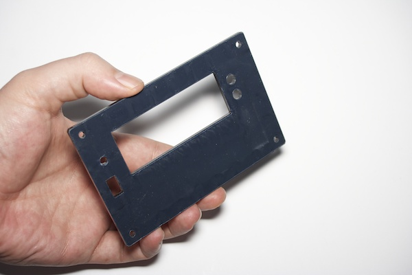
Place the front piece, matching the holes with the four threads of the hex spacers PCB.

To attach this piece of acrylic you use the four M3 screws as in the following picture. It is enough to squeeze by hand and do not too much force to avoid damaging the acrylic.
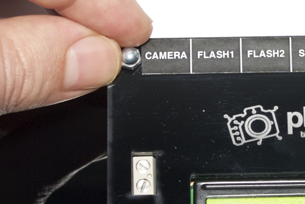
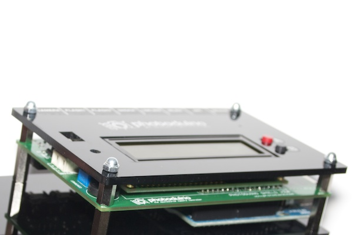
9v Battery holder
You can use a 9V battery to power your Photoduino. The battery holder also has a switch for turn on/off Photoduino.
To attach the battery holder to the base of the box, you must use the adhesive Velcro. Put one of the two pieces at the base and the other piece in the back of the battery holder.
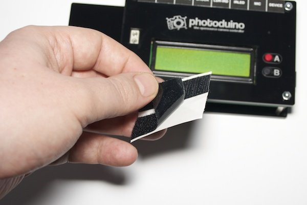


If you open the sliding battery holder (maybe you need to remove a screw before carrying), you can put in the 9V battery. If you are using alkaline batteries have much better results.
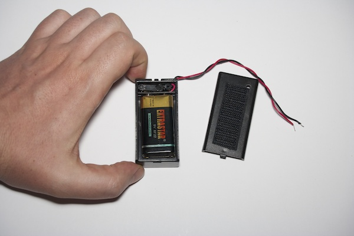
Now you can connect to the main circuit with a screwdriver as in the following picture.

You know, the red wire to positive (+) and black wire to negative (-).
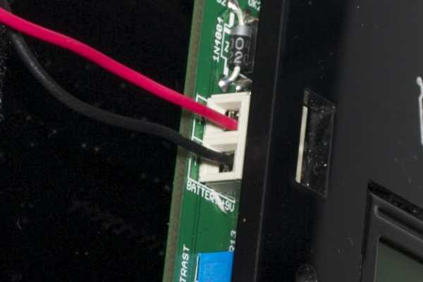
Now you can place it on the base, the Velcro will fix in place and allow you to remove when you want to change the battery.
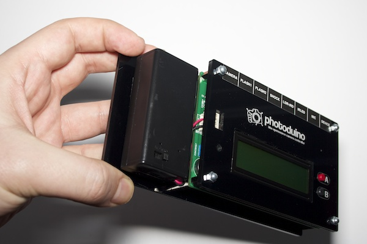
Bumpers
For your Photoduino do not slip or scratch the surface you put it, you must put four adhesive rubber bumpers.

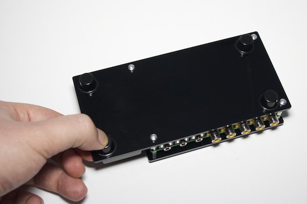
You have your Photoduino mounted inside the case :)
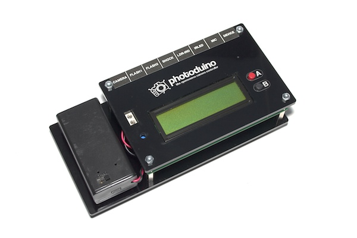